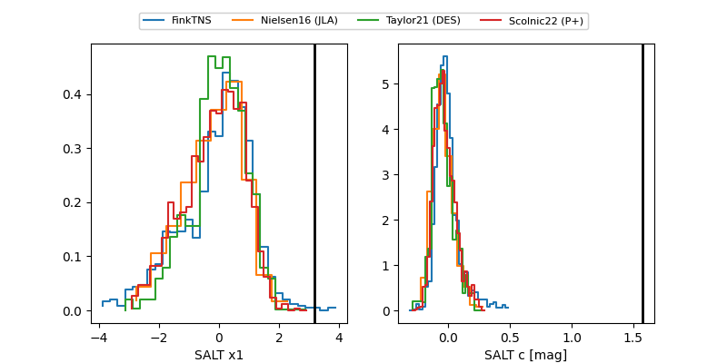

FINK: ZTF25abjkhdi
Lasair: ZTF25abjkhdi
ALeRCE: ZTF25abjkhdi
ZTF25abjkhdi (ztf,fink)
equatorial (ra, dec) = (21.7678,-21.49337)
galactic (l, b) = (180.0718,-80.12317)

last ztfg=19.88
4 ztfg detections